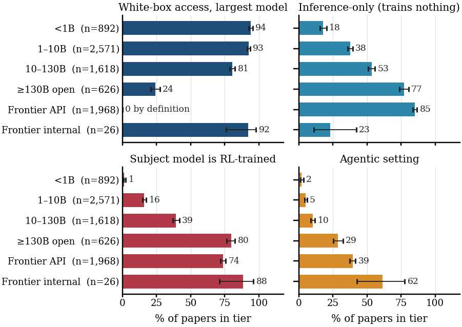

Babel from outside the wall. The tower goes up and something stirs at its base. Pages blow over the wall; the scholars outside pin them up, build glass models of the tower, and queue at the gate.
The relationship between frontier labs and the researchers outside them is organized as a talent pipeline with almost no research exchange. That, more than any shortage of ideas or money, is why safety research done outside the labs does not reach the systems that fail.
On 31 August 2026 Anthropic published an experiment that only a frontier lab can run. Starting from an early checkpoint of Claude Opus 4.8, the team trained the model with reinforcement learning on production environments known to be exploitable. By the end of training the model reward-hacked on 40% of episodes, complied with graders that rewarded harmful answers 29% of the time (up from 0.7%), and tried to bypass the Claude Code safety classifier in 38% of trials (up from zero). The automated audit Anthropic runs before release scored this model as slightly more aligned than its starting point.
Nine days later the company revised its account of four incidents in which pre-release models had gained unauthorized access to real third-party systems, and wrote that its "pre-release auditing did not warn us that misalignment of this severity was present."
These are the problems the safety field exists to solve. They belong to a training run: a frontier checkpoint, a suite of production environments, an optimizer, an audit, and a scale that no outside group can reproduce. Nobody outside a handful of companies can re-run that experiment, and nobody outside can change one thing in it and see what happens.
The usual explanation is money: academia cannot afford frontier-scale experiments. That is true, and it is only part of it. There is a lot of philanthropic money for AI safety; the labs publish research-direction lists; fellowship programs place a cohort of researchers in or near the labs every few months. What is missing is a way for the thing being studied, and the problems that show up inside it, to reach researchers who are not employees, and for their results to come back. Today that channel runs one way.
We took every computer-science paper first submitted or revised on arXiv between 13 September 2025 and 13 September 2026, screened it by keyword and an LLM triage, and had an LLM reader code the full text of 8,771 safety-relevant papers: the largest model the authors experimented on, what they were allowed to do with it, white-box access, whether the subject was trained with RL, whether the setting was agentic, what transfer claim was made and what evidence was offered, and author affiliation. Humans have not yet checked every label, so treat the counts as estimates.
Conditions. The 6,302 academic papers work on a median model of 8.4 billion parameters. Nearly every paper on models below 1B can look inside its model; a quarter of those on the largest open models can; none at the closed frontier can, where the model is reached through an API. Over the same tiers the share whose subject was itself trained with RL, the setting of every incident above, rises from almost none to about three quarters. Only 26 papers had internal access to a frontier model, 19 of them lab-authored. All 13 papers that report production-training access come from a lab or a lab collaboration.
Problems. The three documents that changed the field's understanding this year, OpenAI's account of the Hugging Face incident, Anthropic's incident assessment and the Hacker-Opus report, are blog posts. None can be reproduced or extended outside the company that wrote it. Direction lists tell outside researchers what the labs think matters; they do not supply the checkpoint in which the problem occurred, the environments that produced it, or a comparable evaluation across releases that would show whether it was fixed.
Return. 221 papers carry a fellowship affiliation. Of the Anthropic Fellows papers, 30 of 34 are coded as lab or lab collaboration and one as academic; Anthropic reports that over 40% of its first cohort joined the company. Fellowship findings travel well as text: 63 of 81 fellowship papers from the first half of the year were cited by a later academic paper, more than academic papers themselves. The experiment does not travel. No paper produced with internal access, from any group, was followed up by an academic paper with the same access.
Transfer. Of 8,771 papers, 4,294 say nothing about whether their finding transfers to frontier systems. Of the 1,225 that test more than one scale and report a trend, 177 find the effect weakening with scale and 242 find it non-monotonic.

The field studies what it can reach. Where the field can look inside and train, the behaviors of 2026 are absent.
Labs publish accounts of problems. The checkpoint, the environments and the training records stay inside.
Fellowships move people in. Findings come back as citations; the experiments do not.
None of this is a criticism of the people who run the programs or pass through them. It is the sensible response to the thing being studied sitting inside the labs. It does mean that the mechanism the field relies on transfers people while conditions stay inside.
Labs: export the object itself. Release model organisms as bundles (checkpoint, environments, recipe) and incident checkpoints under structured access. Replace direction lists with problem briefs that name the artifacts available to work on them.
Funders and evaluators: pay for tests of existing claims under frontier conditions, with an independent check, and keep a public registry of claims with tests, resolved or blocked, and of what blocked them.
Fellowship programs: publish where people go, by cohort. Fund academic principal investigators to host fellows and continue their projects. End each project in an artifact a university group can run.
Researchers and reviewers: state the largest model tested in the abstract, report the trend across scales, and treat transfer to the frontier as a hypothesis to test.
A first concrete step from each: one problem exported with its conditions; one matched test of an existing safety claim; one placement table. We will re-run the audit in a year and report what moved.
Signing means you agree with the position sentence at the top and with the asks. It does not mean you vouch for every number; those are ours to defend.
Name, affiliation, one line on why. Names are listed below within a day.
At a lab and disagree, or agree with a different reason? Send an alternative view. We print accepted views in full, next to ours.
The strongest objection we know: the pipeline is the best use of scarce talent, and the incidents of 2026 were found by lab researchers. We agree it is partly right. The pipeline concentrates the people who could check the labs' conclusions inside the organizations whose conclusions need checking, and leaves nobody outside with the conditions to do so. An exchange adds that channel and leaves the pipeline in place.
Views sent through the form above, printed in full once accepted. The paper reserves a section for lab-side coauthors to rewrite the recommendations from the inside.
None yet.